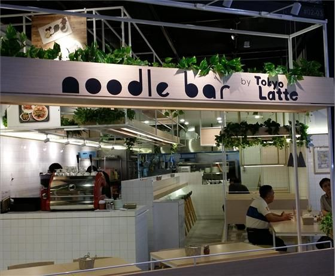
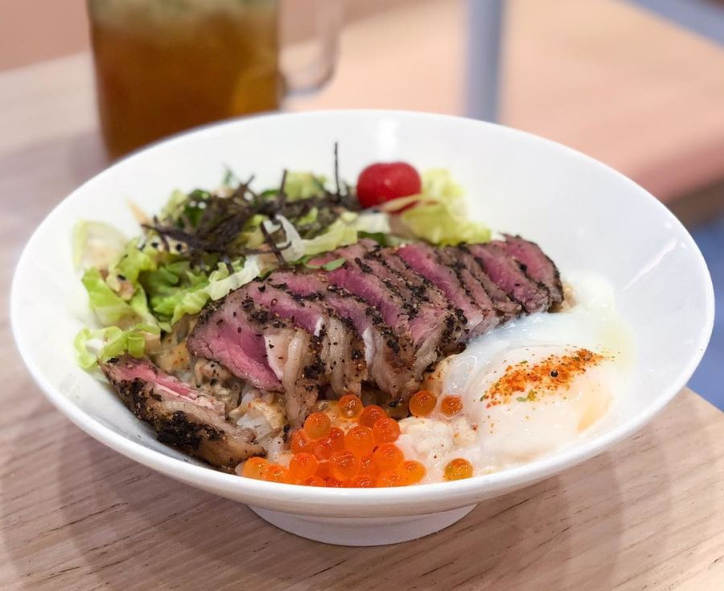
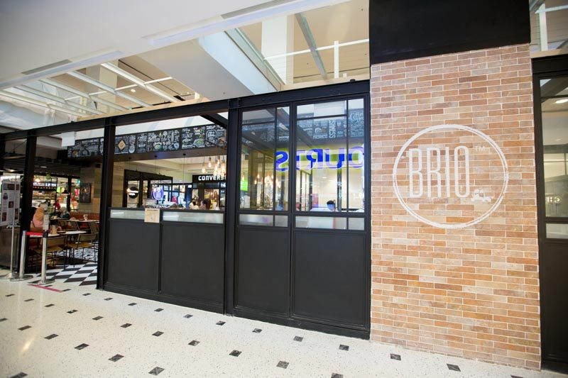
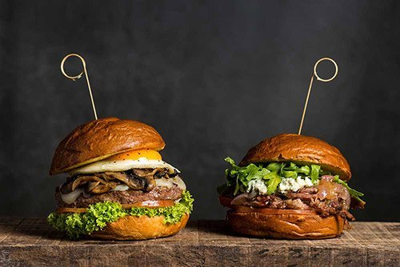
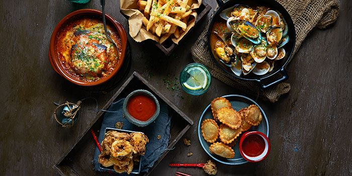
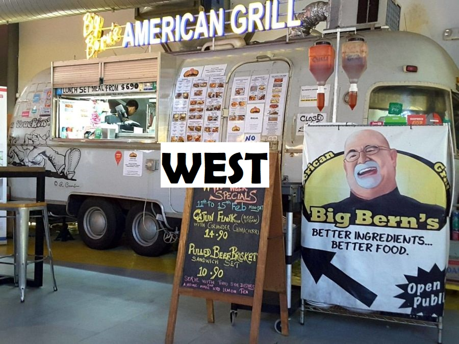
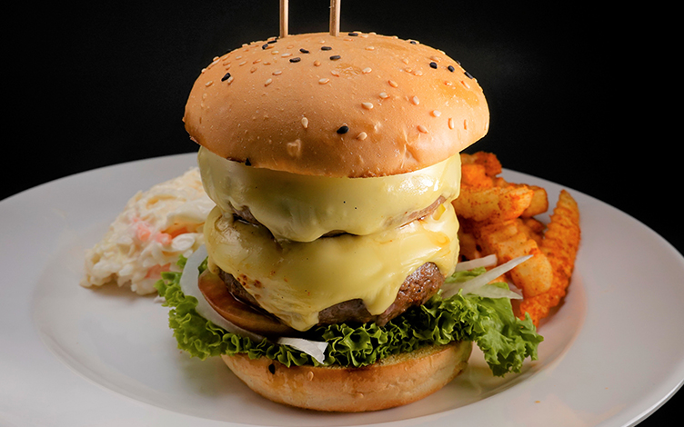
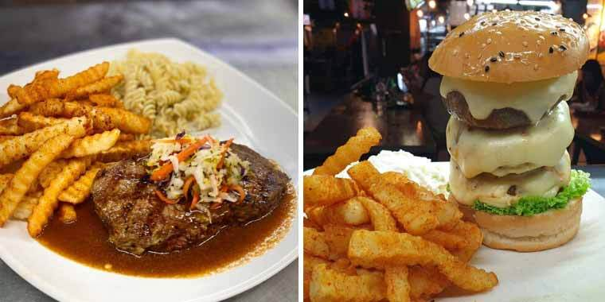

1. The White Kitchen by Tokyo Latter

Previously known as Noodle Bar by Tokyo Latte, this sleek-looking café lies amongst the “fashion district” of JCube.
The café is furnished with wooden table tops and bar stools, giving it a touch of simplicity and a homely feel.

The White Kitchen specialises in Western-Japanese fusion and serves up a great variety of quality dishes at reasonable
prices. Their Grilled Beef with Salmon Roe Don is their specialty (SGD 12.50) and the restaurant shows how they partner
seafood and meat perfectly together through their Grilled Prawns and Sirloin Steak (SGD 18.50).
The White Kitchen
Address: 2 Jurong East Central 1, JCube, #02-03, Singapore 609731
Opening hours: 11.30am – 10pm Daily
2. Brio

Conveniently located in the heartlands, Brio is a hipster café, which serves up quality, delicious European street food.
It is located on the 2nd floor of Jurong Point, a megamall located just next to Boon Lay MRT station along the
East-West Line.

Their extensive menu includes a mix of cuisines from all over Europe with a little Asian twist. Here for a filling, yummy
meal? Try out their Salted Egg Fish & Chips (SGD 14.50) or their Beef Ragu Tagliatelle (SGD 16.80).

Brio
Address: 1 Jurong West Central 2, Jurong Point, #02-24/K5, Singapore 648886
Opening hours: 11am – 10pm on Weekdays, 10.30am - 10pm on Weekends
Reserve a Table
3. Big Bern’s American Grill

This American-style “food truck” can be found amongst the jungle of cafés at Timbre+, a modern, hipster hawker centre
complete with live entertainment and delicious food.

Big Bern’s American Grill was set up by the same owner who brought you Botak Jones (or its halal counterpart, Botak’s
Favourites). Their signature Cajun chicken (From SGD 9.50) and Cheesesteak Po’Boy (From SGD 14) are to die for and don’t
forget to complete your meal with their awesome seasoned fries.

Big Bern’s American Grill
Address: 73A Ayer Rajah Crescent, Timbre+, #01-35, Singapore 139957
Opening hours:
11.30am - 10.30pm (Monday to Thursday),
11am - 11.30pm (Friday),
12pm - 11.30pm (Saturday),
12pm - 9pm (Sunday).
Visit Website
Back to Top